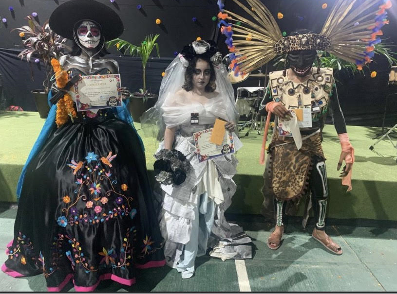

El colegio de bachileres ha tenido varios eventos de los cuales mencionamos algunos:
Han hecho eventos de paraescolares, que consiste en donde todos los paraescolares se reunen y hacen eventos de las cuales participan todos (futbol, pintura, basquetbol, danza, teatro, escolta)Todo esto con el fin de poder convivir y para eliminatorias de Interbachillres, aquí realizan diversos juegos como juegos interactivos creados por los profes (saltar la soga en equipo, pelea de globos cin agua, competencia de baile, crean fogatas, acampan en la cancha de futbol, ren de globo, etc) Esto ayuda tambien como estudiante a poder socializar y crear un vinculo con los demás, considero que es un evento que nos ayuda a nosotros como estudiantes.
Tambien hacen concursos en donde todos los grupos participan como fue en el dia de los muertos, cuando hicieron de los municipios y demás en donde participan la mayoria de los grupos y semestres. Een este tipo de actividades aprendes a participar y a trabajar en equipo con todo tu grupo, nos ayuda a saber organizarnos y a mostrar nuestro talento.

Tambien han hecho eventos para los estudiantes de ultimo semestre en el cual van a las universidades o las universidades vienen al colegio para dar informacion y que nosotros como estudiantes de ultimo semestre podamos tomar una descicion muy importante para nosotros, esto se lleva acabo a finales del 6to semetres y es muy impotante que se lleve a cabo.